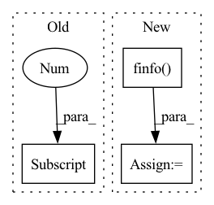

Pattern ID :13608
Before Change
x1 = x1.log_softmax(-1)
x2 = x2.log_softmax(-1)
x1_max = x1.max(-1, keepdim=True)[0]
x2_max = x2.max(-1, keepdim=True)[0]
x1_stable = x1 - x1_max
x2_stable = x2 - x2_maxAfter Change
torch.Tensor: The pairwise joint product kernel matrix, of shape (batch_size_1, batch_size_2).
eps = torch.finfo( x1.dtype) .eps
if apply_softmax:
x1 = x1.log_softmax(-1)In pattern: SUPERPATTERN
Frequency: 4
Non-data size: 3
Instances Fragment ID: 45707721
Project Name: jgraving/selfsne
Commit Name: 8a7af0bd2e24010295ac3852ef01ac042082082d
Time: 2023-05-07
Author: jgraving@gmail.com
File Name: selfsne/kernels.py
M Class Name: AnonimousClass
N Class Name: AnonimousClass
M Method Name: pairwise_joint_product(4)
N Method Name: pairwise_joint_product(4)
M Parent Class:
N Parent Class:
M File Name: selfsne/kernels.py
N File Name: selfsne/kernels.py
M Start Line: 445
M End Line: 455
N Start Line: 443
N End Line: 450
Before Change
self.to_attn_logits = nn.Parameter(torch.eye(dim))
def forward(self, x):
remainder = x.shape[-1] % self.pool_size
if remainder > 0:
x = F.pad(x, (0, remainder), value = 0)
After Change
logits = self.pool_fn(attn_logits)
if needs_padding:
mask_value = -torch.finfo( logits.dtype) .max
logits = logits.masked_fill(self.pool_fn(mask), mask_value)
attn = logits.softmax(dim = -1)
return (x * attn).sum(dim = -1) Fragment ID: 45707722
Project Name: lucidrains/enformer-pytorch
Commit Name: d6c7c92831f85618e38d208d15a411e1259fa4b3
Time: 2021-10-30
Author: lucidrains@gmail.com
File Name: enformer_pytorch/enformer_pytorch.py
M Class Name: AttentionPool
N Class Name: AttentionPool
M Method Name: forward(2)
N Method Name: forward(2)
M Parent Class: nn.Module
N Parent Class: nn.Module
M File Name: enformer_pytorch/enformer_pytorch.py
N File Name: enformer_pytorch/enformer_pytorch.py
M Start Line: 122
M End Line: 128
N Start Line: 122
N End Line: 139
Before Change
// help auto-solve a frequent area of confusion around input masks in auto-regressive
// if user supplies a mask that is only off by one from the source sequence, resolve it for them
mask = kwargs.get("mask", None)
if mask is not None and mask.shape[1] == x.shape[1]:
mask = mask[:, :-1]
kwargs["mask"] = mask
After Change
if self.mask_prob > 0.:
rand = torch.randn(inp.shape, device = x.device)
rand[:, 0] = -torch.finfo( rand.dtype) .max // first token should not be masked out
num_mask = min(int(seq * self.mask_prob), seq - 1)
indices = rand.topk(num_mask, dim = -1).indices
mask = ~torch.zeros_like(inp).scatter(1, indices, 1.).bool()
kwargs.update(context_mask = mask)
out = self.net(inp, **kwargs) Fragment ID: 45707727
Project Name: lucidrains/x-transformers
Commit Name: 595a4745d532c20b8ebd310256c342e946a4cef7
Time: 2022-11-02
Author: lucidrains@gmail.com
File Name: x_transformers/autoregressive_wrapper.py
M Class Name: AutoregressiveWrapper
N Class Name: AutoregressiveWrapper
M Method Name: forward(2)
N Method Name: forward(2)
M Parent Class: nn.Module
N Parent Class: nn.Module
M File Name: x_transformers/autoregressive_wrapper.py
N File Name: x_transformers/autoregressive_wrapper.py
M Start Line: 107
M End Line: 118
N Start Line: 122
N End Line: 142